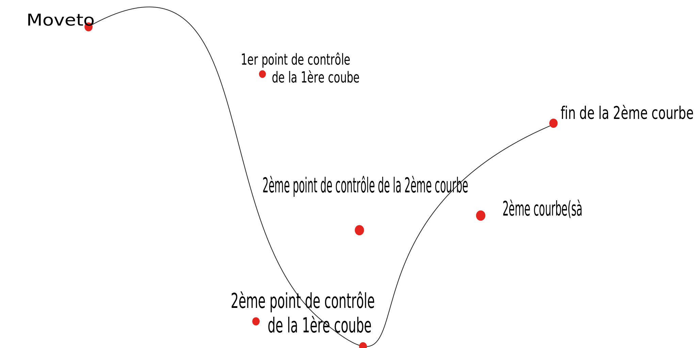

Intro
Le SVG, abbréviation de "Scalable Vector Graphics" (graphiques vectoriels adaptables), est un langage simple qui permet de créer des dessins vectoriels
Avantages :
- Contrairement au bitmap, on peut zoomer sur les images sans perdre en qualité.
- On peut aussi imprimer à très haute résolution.
- Contrairement au Flash (avant Flash 8), il existe des balises en SVG qui favorisent le référencement de documents par les moteurs de recherche.
Désavantages :
- Les utilisateurs d'IE doivent se procurer un plug-in.
- Ce plug-in est assez lourd.
Structure d'un doc SVG
Le SVG est un langage basé sur le XML, donc tout document SVG doit commencer par la déclaration XML :
<?xml version=\"1.0\" standalone=\"no\"? >
l'attribut standalone="no"
indique que le document n'est pas indépendent, il fait référence à des fichiers externes, entre autres une DTD. Une DTD est un fichier qui indique quelles balises ont le droit d'être utilisées, avec quels attributs, etc.
Le DTD du svg s'inclue dans la balise
Finalement la balise dans laquelle nous allons inscrire notre code est tout simplement :
<svg></svg>
Cette balise prend (au moins) 4 attributs :
XMLNSl'espace de nom du SVG (une page où trouver l'information à son sujet);version, la version du langage (dans ce cas le SVG 1.1);height, la hauteur du doc (en px aussi);width, la largeur du doc (en px);
Récapitulatif :
<?xml version="1.0"standalone="no"?>
<!DOCTYPE svg public"-//W3C//DTD SVG 1.1//EN" "http://www.w3.org/Graphics/SVG/1.1/DTD/svg11.dtd">
<svg xmlns="http://www.w3.org/2000/svg" version="1.1" width="500" height="500">
</svg>
Nous avons quelques autres balises pour indenter notre code telles que :
-
La balise
<defs>qui sert de "bazar" pour mettre les lignes de code qui vont être utilisées plusieurs fois, cela permet d'éviter les répétitions et de gagner du temps. -
La balise
<g>, cette balise sert a grouper des éléments de la même manière que les "div" et les "span" en HTML5.
Base du dessin en SVG
Comme nous en avons rapidement parlé dans le chapitre précédent le SVG est un langage qui permet de "dessiner" et animer des formes plus ou moins complexes. Pour ce faire il existe plusieurs balises telles que :
-
<rect x="100" y="100" height="50" width="100"/>qui permet de créer un rectangle par rapport a l'axe X/Y. -
<ellipse cx="30" cy="150" rx="40" ry="100"/>qui permet de créer une ellipse dont on peut influencer la position avec les attributs cx/cy et le rayon avec rx/ry -
<circle cx="" cy="" r="" />même fonctionnement que l'ellipse mais celui-ci permet de dessiner des cercles. -
<polyline points="50,50 200,100 20,200 200,40 300,50 400,60"/>Polyline ou ligne brisée, est un ensemble de droites reliées, un seul attribut est requis : "points". Il permet d'indiquer chaque point sur la ligne brisée, chacun de ces points séparé par une virgule et chacun de leurs axes séparé par un espace." -
<polygon points="0,0 40,20 20,20 20,40 30,50 40,60" />fonctionne aussi avec l'attribut "points", la diférence régit dans le navigateur qui trace lui-même une ligne du dernier au premier point pour fermer le polygon. -
<circle cx="" cy="" r="" />même fonctionnement que l'ellipse mais celui-ci permet de dessiner des cercles. -
<line x1="10" y1="50" x2="200" y2="80">permet de créer un segment du point 1 à 2.
Nous pouvons aussi styliser nos formes en leur ajoutant l'attributstyle qui comporte fill pour l'intérieur de la forme et stroke pour son contour, l'opacité de chaque peut être également modifiée avec respectivement fill-opacity et stroke-opacity.
Les tracés
Un tracé est plus général qu'une ligne brisée. En effet, il permet non seulement de dessiner des droites, mais aussi des courbes. On l'introduit avec la balise "path" il prend l'attribut "d" qui indique les commande (ligne, courbe, etc) à effectuer pour dessiner le tracé. Ces commandes sont sensibles à la casse et sont très variées...
Un point courant est la dernière coordonnée indiquée dans l'attribut "d". Cela peut être soit un "moveto", ou la fin d'une courbe, d'une ligne, etc
Moveto
La commande moveto ('Move to', 'bouger vers' en anglais) établit un nouveau point courant, on note :
<path d="M100,500" />
Lineto
Elle trace une ligne du point courant vers un autre
Exemple:
<path d="M100,100 l400,150"/>
Les commandes h et v
Elles sont utilisées pour dessiner des lignes horizontales (H) et verticales (V) seulement. Je vous conseille de les utiliser, car elles reduisent la taille de vos fichiers. Leur fonctionnement est similaire à lineto.
La commande z
La commande closepath (Z) est un raccourci qui trace une ligne vers le point spécifié avec la dernière commande moveto. Il n'a besoin d'aucune coordonnée.
Exemple:
<path d="M200,200 l10,10 h10,20 v50,20 z"/>
Les courbes
Les courbes sont un peu plus difficiles à assimiler. En effet, vous devez savoir quel type de courbe vous souhaitez dessiner. Et il en existe trois :
Les courbes quadratiques
Les courbes quadratiques de Bézier ressemble à cela:

On introduit ce type de courbe avec la commande Q qui trace une courbe à partir d'un point courant. Vous devez indiquer deux coordonées :
- Un point de contrôle
- Le point de fin de la courbe
Un point de contrôle est un point qui "tire sur la courbe", voici un exemple en visuel :
Il existe une derniere commande pour dessiner des courbes quadratiques : (T). C'est une sorte de raccourci. Vous devez seulement indiquer une coordonnée, le point de fin de la courbe. Le point de contrôle est calculé comme étant le point image selon une symétrie centrale du point de contrôle de la courbe q précédente. Petit schéma imagé...

Les courbes cubiques
Ici cela devient un peu plus compliqué... Une courbe de Bézier cubique ressemble a cela :
Nouvelle commande (C), elle a besoin de 3 coordonnées :
- Un point de contrôle en début de courbe
- Un point de contrôle en fin de courbe
- Un point de fin de courbe
Chaque point de contrôle tire la moité de la courbe vers lui. Exemple:
Il existe aussi une commande de raccourci (comme (T)), mais pour les courbes cubiques. C'est 'S'. Vous devez seulement indiquer le deuxième point de contrôle et le point de fin de courbe, le premier point de contrôle étant l'image par symétrie centrale du deuxième point de contrôle de la courbe précédente. Encore un schéma:
Les arcs elliptiques
Un arc elliptique est une partie d'une ellipse, comme ceci:
Ces arcs sont introduits par la commande "A", qui est probablement la plus compliquée, car elle prend 6 paramètres :

- le rayon horizontal de l'ellipse
- le rayon vertical de l'ellipse
- l'angle de rotation de l'ellipse par rapport à l'horizontal
- la valeur du drapeau-large de l'arc (0 ou 1)
- la valeur du drapeau-balayage de l'arc (0 ou 1)
- le point de fin de l'arc elliptique
<path d="M200,450 a25,100 -30 0,1 50,-25" />
Animations
Le plus gros interêt du SVG est l'animation de forme plus ou moins complexe de façon simple et efficace. Pour animer nos formes, nous allons simplement utiliser la balise :
<animation>
Cette balise prend plusieurs attributs :
xlink:href, cet attribut defini un lien vers une ressource de référence (avec un ID ou une classe)attributeName, qui sert à séléctionner l'attribut sur lequel on veut influer (x, y, fill, stroke, opacity, etc).attributeType, cet atribut permet d'indiquer selon l'élément sur lequel on influe est du XML ou du CSS.from, position de départ de l'animation.to, positon de fin de l'animation.value, il est possible d'utiliser value pour donner plusieurs coordonnées.begin, le moment auquel commence l'animation, en seconde (il est possible d'utiliser .start et .end pour faciliter la synchronisation avec les autres animations).dur, indique la durée de l'animation.repeatCount, il prend comme valeur "indefinite" si l'on veut que l'animation se fasse en boucle (dans ce cas, une animation avec value permet de faire une animation simple fluide avec une ligne de code), on peut bien sûr lui donner une valeur numérique si l'on veut un nombre defini d'itérations.-
restart, il peut prendre plusieurs valeurs :-
always: l'animation peut redémmarer quand on le souhaite -
whenNotActive: l'animation ne peut redémarrer que quand elle n'est pas active -
never: l'animation ne peut jamais redémarrer.
-
Il existe d'autres balises d'animations telles que :
<animateMotion>, qui permet d'effectuer une animation par rapport à un path. Un petit exemple :<animateTransform>, l'élément permet d'animer un élément soit par translation, mise à l'échelle, rotation et/ou inclinaison.
<animateMotion d="M200,300 t200,300 "/>
Avec ceci, nous pouvons donc réaliser des animations plus poussées.
Le texte
La première chose a savoir avec le texte en SVG, c'est que la version actuelle ne gère pas les blocs. Heureusement, il existe des techniques pour contourner les lacunes du SVG.
Pour écrire notre texte nous allons utiliser la balise
<texte>
. Cette balise permet donc d'afficher des lignes de texte dans nos documents. Comme vous pouvez le voir, elle contient les attributs x et y qui nous servent à positionner le texte. L'origine des points x et y se trouve au bas gauche de la première lettre de la phrase.
Comme pour les formes, il est possible de styliser vos textes :
-
la couleur est remplacée avec
filletstroke. -
la taille du texte avec
font-size. -
les italiques se font avec
font-style. -
le gras avec
font-weight. -
le changement de police avec
font-family. -
les surlignages et soulignages avec
text-decoration. -
l'alignement du texte avec
texte anchor(change la position de X/Y) exemple imagé conseillé ici(a discuter). -
l'espacement des lettres entre les mots avec
letter-spacing(pour l'espacement entre chaque lettre) etword-spacing(pour l'espacement entre chaque mot).